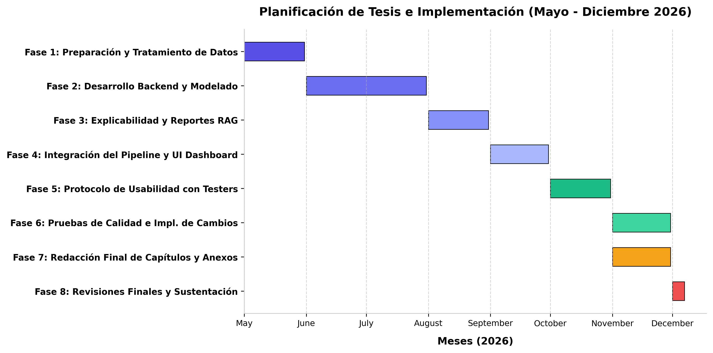

Planificación y Marco de Hipótesis
Sustento metodológico y temporal del proyecto de investigación
1.4 Hipótesis de la Investigación
A continuación se presenta el marco de hipótesis cuantitativas de la investigación, formulado para contrastar formalmente la arquitectura propuesta frente a baselines técnicos y flujos aislados mediante pruebas estadísticas robustas.
Hipótesis General (H1)
Un sistema integrado de predicción, detección de anomalías, explicabilidad y generación de reportes trazables mejora la trazabilidad de decisiones, la comprensión de alertas y el tiempo de decisión de supervisores operativos frente al uso de componentes aislados.
Hipótesis Nula (H0)
No existe diferencia significativa entre el sistema integrado y los componentes aislados en trazabilidad de decisiones, comprensión de alertas o tiempo de decisión de supervisores operativos.
Sub-hipótesis H1a (Rendimiento)
El uso combinado de modelos tabulares y detectores de anomalías (ensemble) permite identificar desviaciones operativas con mayor rendimiento de detección que detectores aislados.
Sub-hipótesis H1b (Explicabilidad)
Las explicaciones de SHAP incrementan la comprensión de las alertas por parte de los supervisores operativos al aislar los factores causales principales de la alerta.
Sub-hipótesis H1c (Reportabilidad)
Los reportes generados mediante RAG a partir de evidencias estructuradas presentan mayor trazabilidad y consistencia numérica que reportes sin recuperación.
Sub-hipótesis H1d (Eficiencia Humana)
El sistema integrado reduce el tiempo promedio requerido para interpretar y responder a una alerta operativa frente a interfaces y gráficos aislados.
Planificación Temporal y Diagrama de Gantt
El cronograma de ejecución del proyecto comprende desde mayo hasta diciembre de 2026, abarcando las etapas de preparación de datos, desarrollo del modelo, integración y el protocolo empírico de usabilidad.

Fases del Proyecto
Hitos del Proyecto
| Hito | Entregable / Objetivo | Fecha Límite | Estado |
|---|---|---|---|
| Hito 1 | Definición y Operacionalización de Variables | 27 de Mayo, 2026 | Completado |
| Hito 2 | Dataset Sintético y Preprocesamiento | 31 de Mayo, 2026 | Completado |
| Hito 3 | Entrenamiento y Ensemble de Modelos Backend | 15 de Julio, 2026 | Pendiente |
| Hito 4 | Integración TreeSHAP y Módulo LLM+RAG | 31 de Agosto, 2026 | Pendiente |
| Hito 5 | Pipeline Unificado y Panel de Control Web | 30 de Septiembre, 2026 | Pendiente |
| Hito 6 | Estudio de Usabilidad y Recolección de Tiempos | 31 de Octubre, 2026 | Pendiente |
| Hito 7 | Cierre Estadístico e Informe Final de Capítulos | 30 de Noviembre, 2026 | Pendiente |
| Hito 8 | Compilación final y Sustentación de la Tesis | 07 de Diciembre, 2026 | Pendiente |